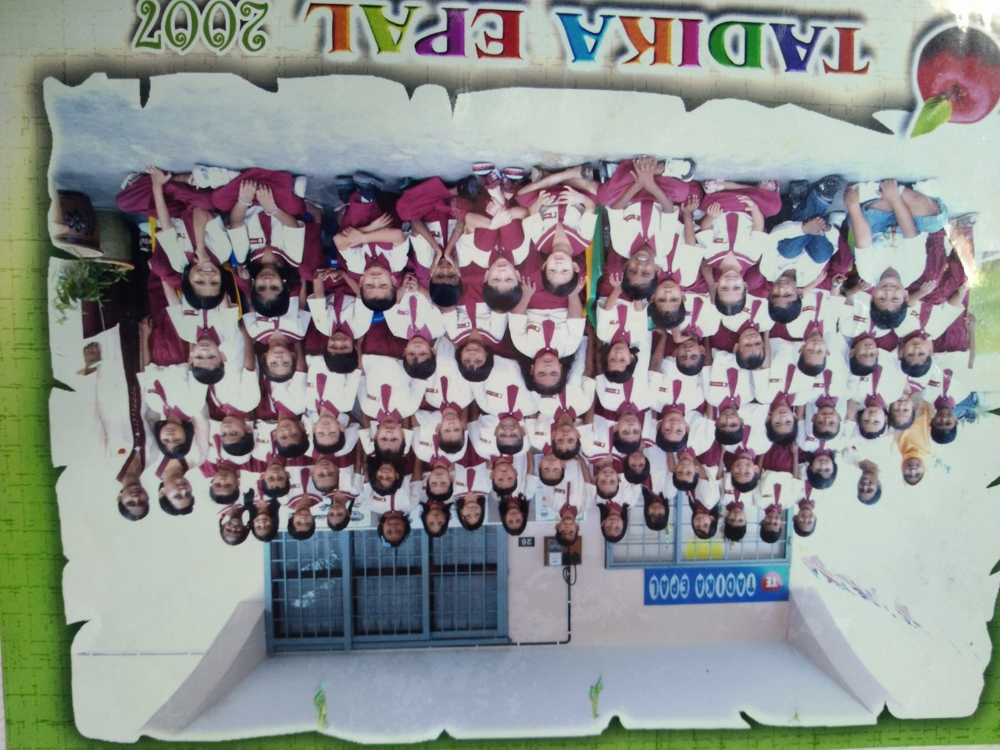
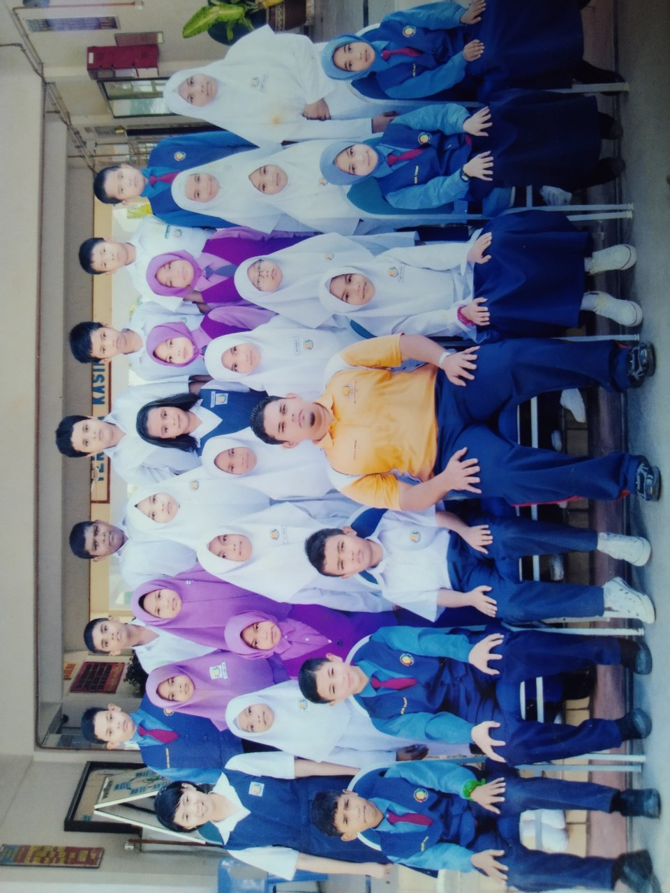
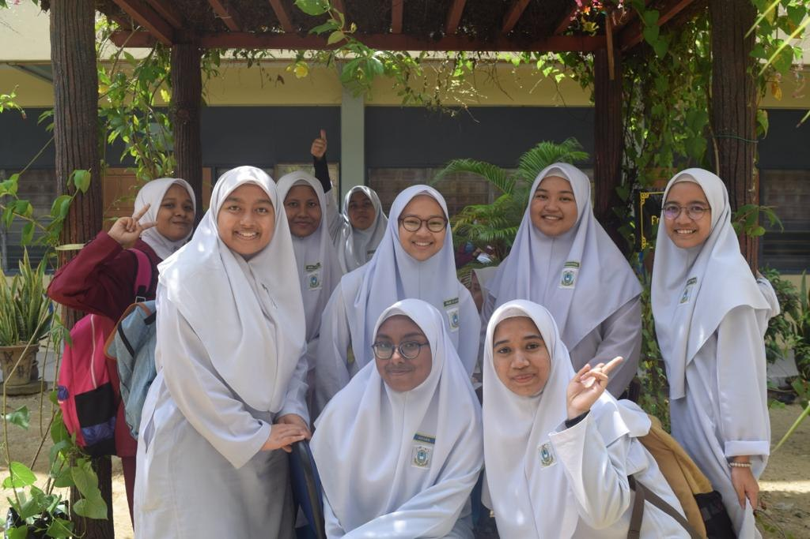

Kindergarden
Tadika Epal
Year: 2006-2007
I went to kindergarten when I was 5-6 years old. The school was close to my house and I went to school on walking with my mother.
Photo of Aishah's kindergarden
Primary School
Sekolah Kebangsaan Permai Indah
Year: 2008-2013
I attended the school from the age of 7-12 years old. I went to school by van with my first young brother, Iman. Also, I got 5A in UPSR results.
Photo of Aishah's primary school
Secondary school
Sekolah Menengah Kebangsaan Datuk Onn Butterworth
Year: 2014-2018
I attended the school from the age of 13-17 years old. I used to live in a hostel and I came home after 2 weeks. On weekends, my family would visit me at the hostel and bring items such as food, stationery and so on.
Photo of Aishah's secondary school
Continues Studies

Universiti Teknologi Mara (UiTM) Cawangan Sungai Petani
Year: 2019-2022
I went to register myself at the university in 2019 for a diploma in information management. I used to live in Masria hostel for 2 semesters and I walked with my friends to class from the hostel. After that, I conducted online learning due to the COVID-19 pandemic until now. After that, I will finish my diploma studies in 2022.